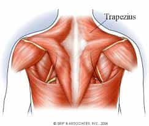

< < < Back
How To Control Your Shoulders With Maxalding – Return Of Kings
A few weeks ago, I gave a brief overview of Maxick’s Muscle Control method (also known as “maxalding”). If you will recall, this is a method of flexing the muscles to give your nervous system a greater “command” of them, which I found to be a decent supplement to a traditional training regimen. Also in that article, I conveyed the total body flexion and relaxation, the core techniques of maxalding.
Now that—hopefully—you have gotten a grip on the concepts of basic muscle relaxation and flexion, we can begin attacking specific muscle groups. Note that I would not advise doing too many at once—the book is organized around large muscle groups, and so will my instruction in it. Besides, I find that it is easier to “get the feel” for one group and then move on, rather than do all of them at once. Also note that this is what Maxick himself advised doing.
And without further ado, let us begin the slightly ironic training of the shoulder girdle; ironic because this training actually targets two muscle groups, neither of which are the deltoid—the latissimus dorsi, and the trapezius.
Latissimus Dorsi
The latissimus dorsi are, in fact, the biggest and most powerful muscles of the upper body. While they are the muscles that comprise the majority of the back, they perform an important role in extending, abducting, and rotating the arms and shoulders. And as luck would have it, these large and noticeable muscles are quite easy to tense, and thus are the first muscles that you should learn how to control.
To begin, take a pose with the hands on the front of the hips. Relax the muscles and let them hang limp.
Then, think really hard about the bits of muscle near the armpit (indicated by arrows int he picture). Think of them all the time, then widen your back as much as you can without ROUNDING the back (ie: bending forward). Keeping the back as flat as possible, lift the shoulders and keep them high and back, then drop them when you feel the back has expanded. When you start, pressure with the hands upon the hips will assist you, but eventually you want to stop doing so.
Maxick’s neo-classical nudity not required.
If back rounding is a problem, beginners can round the back and bring the shoulders forward, then press the hands against the waist, and attempt to pull the shoulders back while retaining lat flexion. Of course, eventually, you want to be able to do this without back rounding
This exercise will make your chest more full.
Trapezius
The trapezius muscles run from the back of the neck to the shoulders and attach to the scapula—the shoulder blades. Where the latissimus dorsi move the arms forward and back, the trapezius move it out, as well as keeping the arm and shoulder aligned when bearing a heavy weight, hence why the humble deadlift is the main traditional exercise in developing them.

But in terms of muscle control, the trapezii are a little more complicated than the latissimus dorsi. For starters, you have to first isolate each indivdual trapezius before you can flex them both.
To begin, use one hand to grip the other with the fingers of one hand wrapped around the knuckles of the other.
Then extend your arms down in front of you as shown
Next, drop the shoulder of the “inside hand”, which forces the dropped shoulder’s scapula to push out. Retain the arm position, apply pressure: the outside “Grasping” hand pushes down, and the inside hand pushes up. The trapezius on the side of the outside hand should notably flex, as seen above.
Then reverse the process on the other side.
Once you have sufficiently mastered trapezius isolation, you must flex both simultaneously. I personally feel Maxick doesn’t explain this well, and thus I will take matters into my own hands.
It helps me to imagine pushing the shoulder down and forcing the trapezius to touch the neck. The trapezius and neck should feel sort of “crowded.” Avoid flexing either the neck or the latissimus dorsi muscles when you do this. Again, the trapezii flexion should be noticeable.
Again, leather thongs are also not required
From here, you can return to isolation—flex both trapezii, and then relax one; remember the feeling of “droopiness” from the first set of exercises I gave you. You should know how that feels, and seek it only in one side, and then the other. Moving an arm can help for beginners, but eventually you should try to keep your arms still.
And finally, you combine flexion with arm movement. Isolate both traps, then seek to hold your arms out straight, maximizing your “wingspan.” Then, push your shoulder blades together, all the while flexing your traps.
And with that, you have mastered trapezius isolation.
“Mastery of Exercises 3, 4 and 5 will give you extraordinary shoulder power and suppleness, with superiority in every sport or occupation you use the shoulders.”
But there’s a lot more muscles to isolate, and those will come in future articles!
Read More: The Best Upper Body Exercise